WashUX Rebrand
A new logo and lightweight brand system for WashUX, WashU's student UI/UX design club — built in four weeks to give the club a voice that finally felt as considered as the work its members make.
The Rebrand
WUX needed a mark that could hold its own next to every other club logo on campus, while still reading instantly as us: a merge of WashU and UX into one wordmark. The final logo interlocks a bold, hand-inked "W" and "X" around a small "U," with a paper-airplane flag standing in for the club's whole mission — pointing students toward design. It ships in two lockups, a bright gradient version for dark surfaces and a solid navy version for light ones, so it holds up on everything from a Discord icon to a printed poster.
-
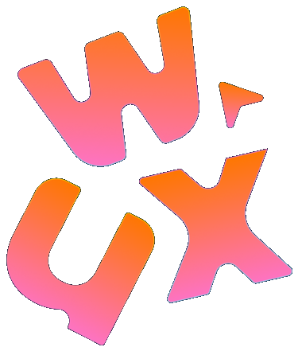
Dark lockup For dark surfaces — social icons, dark-mode UI, merch on black. -
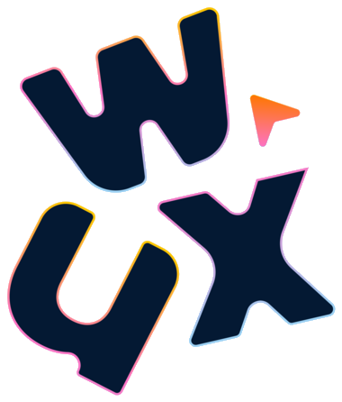
Light lockup For light surfaces — the club site, decks, printed flyers.
The Final Design System
We built the palette around WashU's own blue rather than away from it, so the club would read as clearly affiliated with the school, then layered in warmer accent colors the university's branding doesn't use, so WUX would still stand apart from every other campus logo built on the same navy. Blues carry structure and credibility; the orange, yellow, pink, and magenta accents carry the energy and playfulness we wanted a student design club to have.
WUX Color Palette
Typographic Hierarchy
Type stayed just as simple as the color system: Poppins end to end, in four weights, so every touchpoint from a slide deck to a sticker sheet pulls from the same handful of sizes instead of reinventing itself each time. Below is the scale we settled on, each row set in its actual weight and size.
The Process
Once we knew we were designing a wordmark, we split the exploration two ways: a monoline, continuous-stroke mark that treated "WUX" as one abstract squiggle, and a bold, letterform-driven wordmark that kept the individual letters legible. We tested both across dark and light backgrounds and a wide color range before picking a direction — but before either one went digital, we started on paper.
Starting on Paper
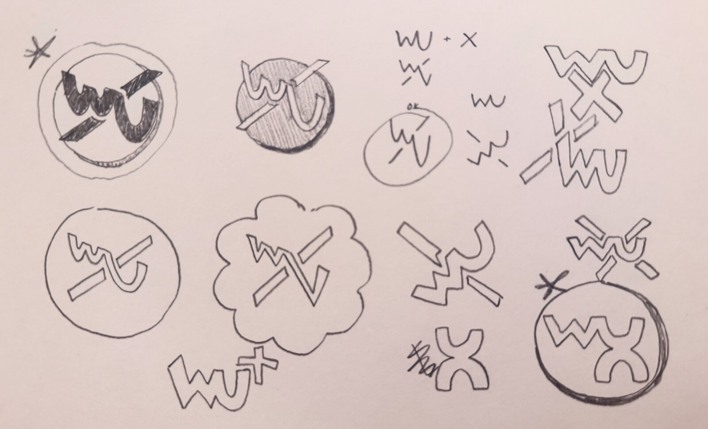
Pencils first: my co-designer and I drew "WU" and "X" together every way we could think of — crossed out, circled, boxed in thought bubbles. Most got scrapped fast, but they settled the big question early: the mark would read as a wordmark, not an icon, and the flag accent (sketched bottom-left) already had a place of its own.
Direction A: The Continuous Line
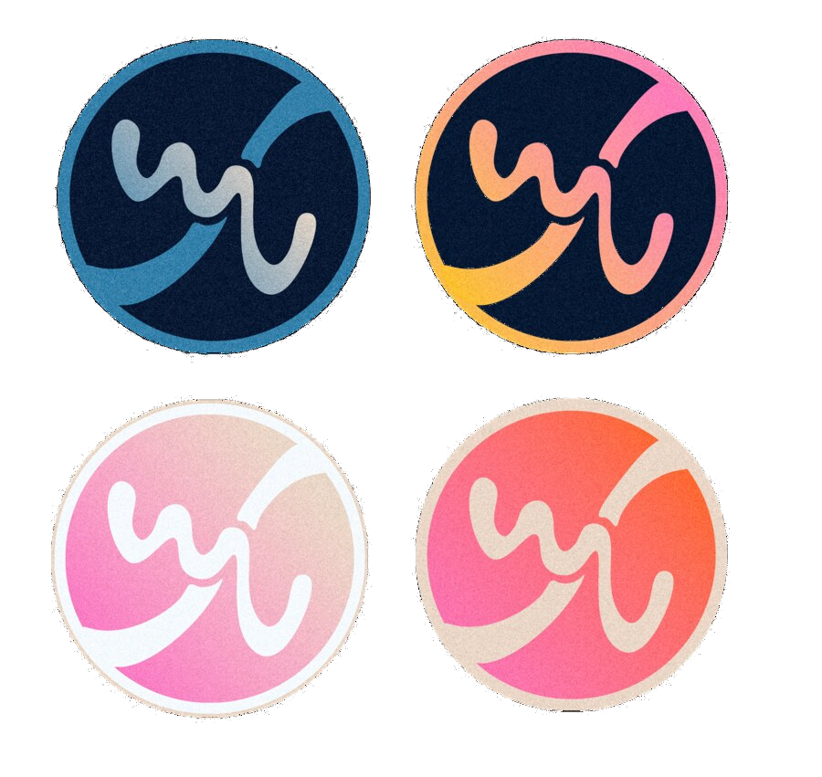
This direction was seductive because it was so simple to animate — one line, drawn in a single stroke. But in user testing with other club members, almost nobody could read "WUX" in it without being told what it said. A logo that needs a caption to be understood wasn't going to work for a club trying to build name recognition, so we shelved it in favor of the bolder, letterform-driven direction below.
Iterate, Iterate, Iterate!
The direction that survived is where the real iteration happened. Once we committed to keeping the letters legible, we ran two full rounds on the bold wordmark — fourteen separate badges in total — each one nudging the outline, weight, color pairing, or flag angle a little further before we landed on a version worth shipping.
Round One: Locking in the Letterforms
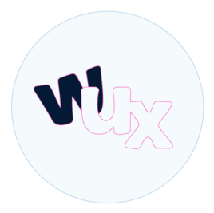
This first round is where the letterforms actually got fixed: how far the "U" tucks under the "W," how sharply the "X" kicks out to the right, and how thick the outline needed to be to stay legible at favicon size. We also tested a monochrome outline-only version as a stamp/watermark variant for merch, which made it into the final system as a secondary mark.
Round Two: Finding the Shape
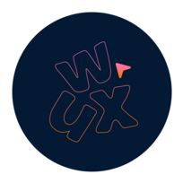
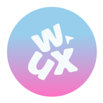
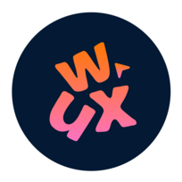
Once we'd committed to keeping the letters legible, the rounds moved fast: outline versus filled, single color versus gradient, and eventually the little flag mark next to the "W" — first tried as a plain triangle, then angled to feel more like a paper airplane in motion. The gradient-on-navy and solid-on-white pairing is what eventually became the final lockups.
Reflection
-
01
Iterating is a catalyst for creativity. Fourteen badges felt like overkill when we started counting, but almost none of the ideas that ended up mattering — the flag as a paper airplane, the outline-only stamp variant, the exact "U" tuck under the "W" — showed up in round one. They surfaced because we kept forcing ourselves to make one more version, not because we sat and willed them into existence. Iteration wasn't just refinement here; it was where the actual new ideas came from.
-
02
Stay focused on portraying a UI/UX and professional vibe to the brand logos. It would have been easy to let a student club logo get too playful and lose credibility, or overcorrect into something so buttoned-up it stopped feeling like a design club at all. Every round we cut down to the pairing that struck that balance: bold and confident enough to sit next to a real brand system, warm and human enough to still feel like it was made by students, for students.
-
03
Making logos is fun. Somewhere between the fifth and tenth badge, this stopped feeling like a deliverable and started feeling like play — trying a dumb variation just to see it, laughing with my co-designer over the ones that clearly weren't working, actually caring in a small-stakes way that pencils don't always get to be. That energy is worth protecting on future projects, not just tolerating.
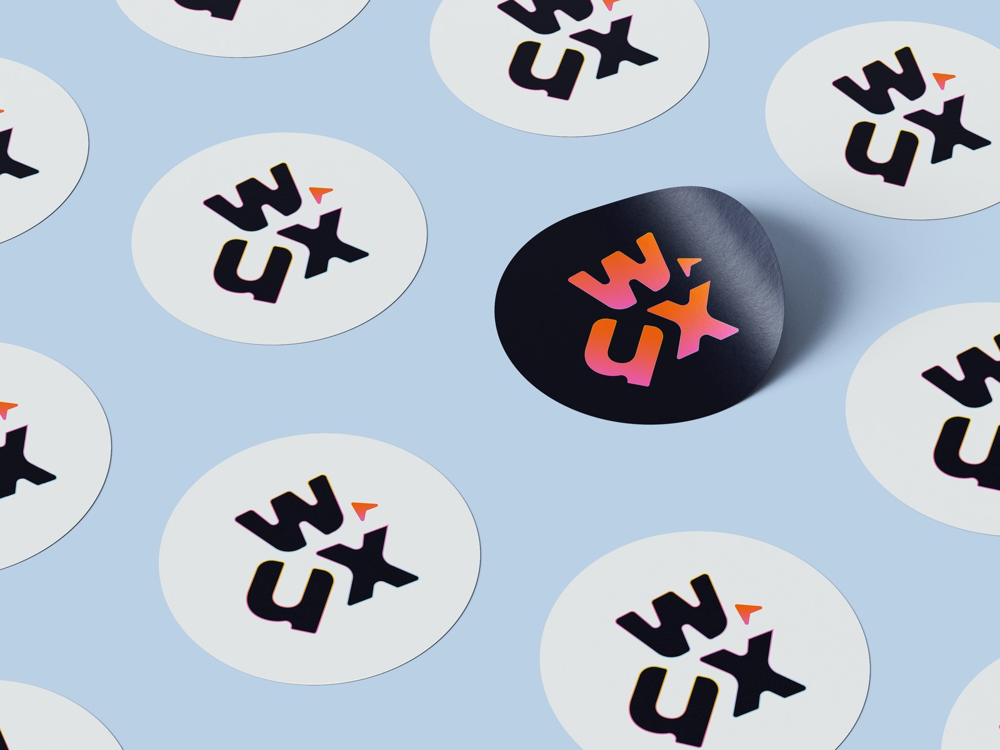